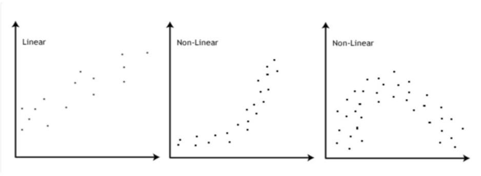
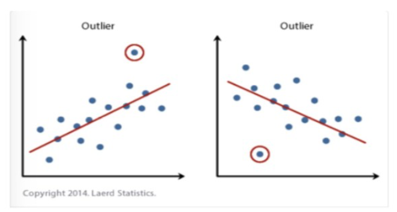
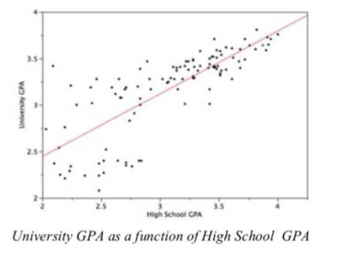
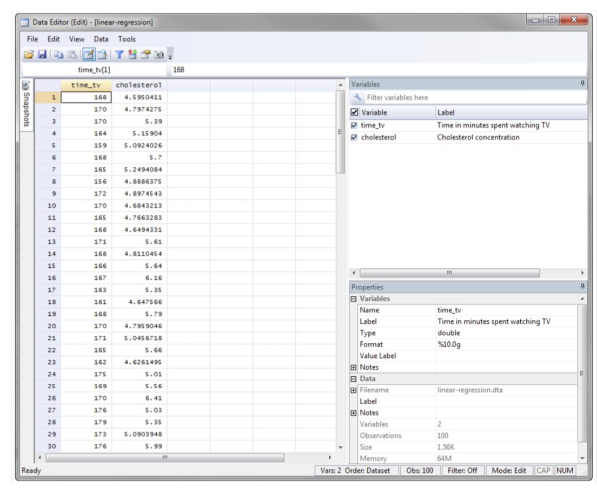
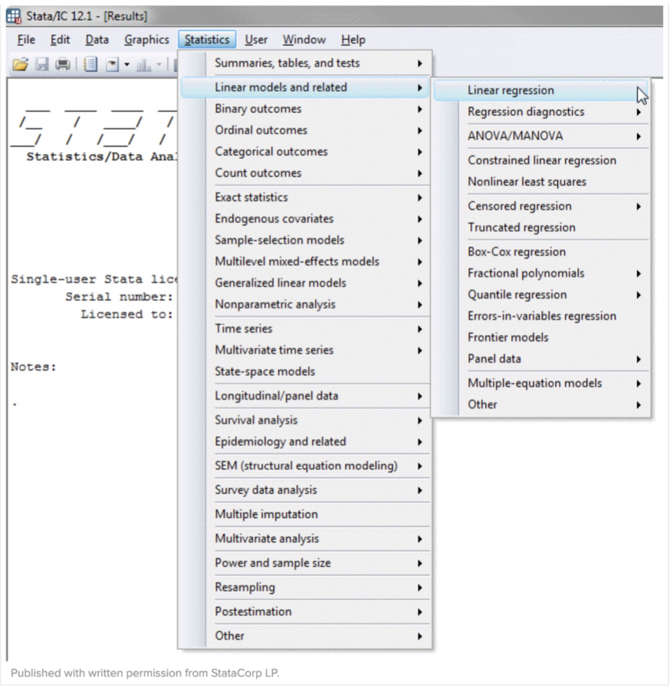
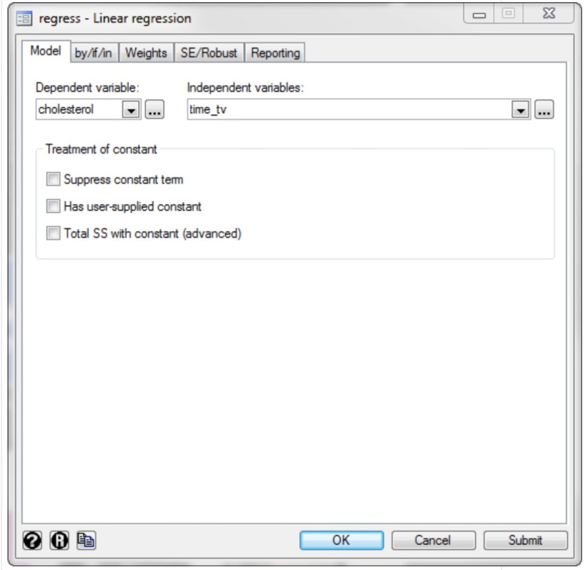
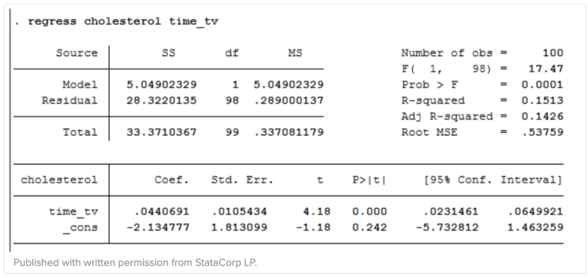

Simple Regression
Simple regression is a statistical method that helps us to summarize and study relationships between two continuous (quantitative) variables. We predict scores on one variable from the scores on second variable. The first variable, denoted y, is regarded as criterion, response, outcome or dependent variable . The other variable, denoted x, is regarded as predictor, explanatory or independent variable. Because there is only one predictor variable, the prediction method is called simple regression.
Assumptions
-
Assumption: Linear relationship. The relationship between the independent and dependent variables needs to be linear.

-
Assumption: There should not be significant outliers. Simple regression is sensitive to outlier and can lead to misleading results.

- Assumption: Continuous. The dependent variable should be continous. Such , revision time, intelligence (measured in using IQ score), etc.. are measurable at the interval or ratio level. For me help you can see more Types of Variables here statistic.laerd.com
-
Assumption: Homoscedasticity(constant variance). The variance around the regression line should be the same for all values of X.

As you can in this example notice the predictions for students with high high-school GPAs are very good but the predictions for students with low high-school GPAs are not very good. That means while the the points for students with high high-school GPAs are close to the regression line , the points for low high-school GPA students are not. - Assumption: The residuals(errors) of the regression line needs to be approx. normally distributed. Two common methods to check this assumption include using either a histogram (with a superimposed normal curve) or a Normal P-P Plot.
Example
To explain you the test we will use the example we already used for the Pearson's Correlation.
We gonna use the example of leard.com where researchers want to find out if cholesterol
concentration also increase as people spent more time watching TV or maybe did the opposite
happen. Especially for healthy 45 and 65 years old men ( an at- risk category of people).
Cholesterol is a health problem for people with high risk of suffering from heart disease because of
fat in blood.
Therefore 100 healthy male participants has been recruited between 45 and 65 years old. The
amount of time of watching TV (e.g. the variable, time_tv) and cholesterol concentration (e.g., the
variable, cholesterol) were recorded for all participants. Now the researcher wants to regress
cholesterol and time_tv.
Setup in Stata
In order to use stata follow the site below to download/purchase stata:
https://www.stata.com/order/download-details/
-
Create two variables: (1) time_tv = the average daily time spent watching TV in min (2) cholesterol= cholesterol concentration in mmol/L
Note: the variables mean two 'related groups' -
Enter the scores for each into the two columns of the Data Editor(Edit) spreadsheet . One column for carb and the other for carb_protein
-
Test the procedure in Stata:
If in the previous section the Assumptions have not been violated. We gonna cary out the test using Stata's graphical user interface(GUI). -
In Stata Version 13 all you need to do is click Statistics >Linear models and related > Linear regression on the top menu, as shown below.

You will see the Regress – Linear regression dialogue box:

Now select time_tv from the Independent variables drop- down box and the cholesterol from the Dependent variable drop-down box.

Click enter.
Output

The output consists of four important pieces of information:
- An adjusted R2value ("Adj R-squared" row): it corrects positive bias to provide a value that would be expected in the population
- The coefficients for the constant and independent variable ("Coef." column),in order to predict the dependent variable cholesterol using the independent variable time_tv
- The F value, degrees of freedom ("F( 1, 98)") and statistical significance of the regression model ("Prob > F" row)
- The R2 value ("R-squared" row) represents the proportion of variance in the dependent variable that can be explained by our independent variable
Interpretation
Please keep the following in mind:
- An introduction to the analysis
- The observed t-value, 95% confidence intervals, degrees of freedom, and significance level (or more specifically, the 2-tailed p-value)
- The information about the sample, including how many participants there were in your sample
- The percentage of the variability in the dependent variable explained by the independent variable (e.g. your Adjusted R2)
- The regression equation for your model
- The observed F-value , degrees of freedom and significance level(e.g. the p-value)
In this example,R2> = 0.151 and adjusted R2 = 0.143 (to 3 d.p.), which means that the independent
variable , time_tv explains 14.3% of the variability of the dependent variable cholesterol, in the
population. Adjusted R2 is also an estimate of the effect size, which at 0.143 (14.3%), is indicative
of a medium effect size. However, normally it is R2 not the adjusted R2 that is reported in results. In
this example, the regression model is statistically significant, F(1, 98) = 17.47 p = .0001. This
indicates that, overall, the model applied can statistically significantly predict the dependent
variable, cholesterol.
In the end it could look like this:
The researcher conducted a linear regression with the result that daily time spent watching TV could statistically significantly predict cholesterol concentration, F(1,98) = 17,47, p= .0001 and time spent watching TV accounted for 14.3% of the explained variability in cholesterol concentration. The regression equation was: predicted cholesterol concentration = -2.135 + 0.044 x (time spent watching TV)
Sources
http://onlinestatbook.com/2/regression/intro.html
https://en.wikipedia.org/wiki/Simple_linear_regression
https://www.statisticssolutions.com/assumptions-of-linear-regression/
http://onlinestatbook.com/2/regression/inferential.html
http://people.duke.edu/~rnau/testing.htm#assumptions
https://realpython.com/linear-regression-in-python/#simple-linear-regression-with-scikit-learn
https://towardsdatascience.com/simple-and-multiple-linear-regression-in-python-c928425168f9
https://scikit-learn.org/stable/auto_examples/linear_model/plot_ols.html
https://statistics.laerd.com/spss-tutorials/linear-regression-using-spss-statistics.php